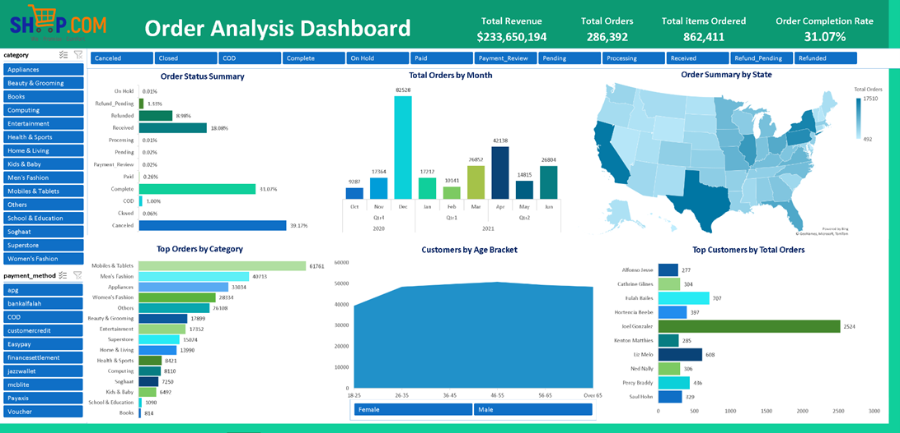

Online Store Sales Analytics
Transforming big data into actionable insights using advance excel techniques culminating to an interactive dashboard displaying Key Performance Indicators (KPIs), breakdown of orders by order status, orders over time and by location, most ordered goods by category, location and payment method, and a breakdown of the customers by gender and by the highest total number of orders from the store to date. Below is a snapshot of the final excel dashboard providing the aforementioned insights.
Here is an embedded link to the Interactive dashboard from the project.
Note that some features of the dashboard may be compromised in the embedding process due to the incompatibilty of those features in the Web and Desktop Microsoft Excel versions.